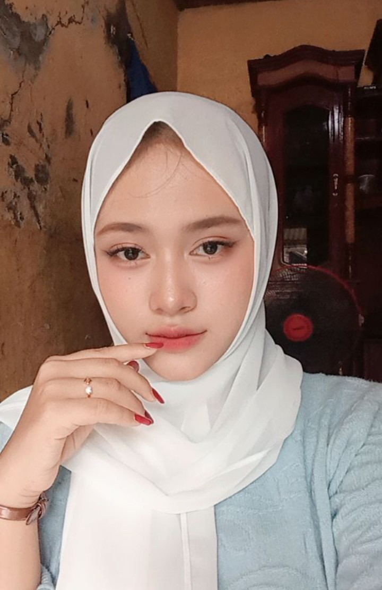

Selamat datang di website portfolio pribadi saya.
| Nama Lengkap | Dwini Rezkandi |
|---|---|
| Tempat, Tanggal Lahir | Cirebon,25 juli 2011 |
| Alamat | Desa Palimanan barat Kec.Gempol Kab.Cirebon |
| dwiekarestani433@gmail.com |
SMK Negeri 1 Leuwimunding
SMP Negeri 1Gempol
SD Negeri 2 Gempol
Beberapa kemampuan yang sedang saya pelajari:
Presentasi microsoft office HTML CSS Praktik Jaringan Jaringan LAN MikroTikBerenang, Menyanyi, Traveling, Mendengarkan musik,Makan, Badminton